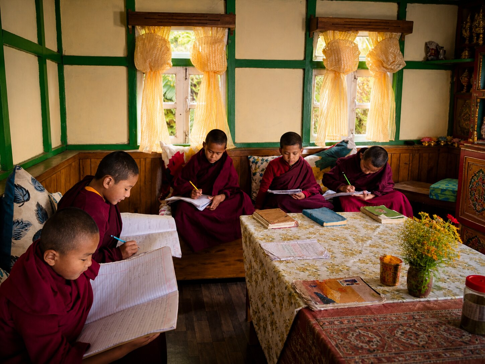
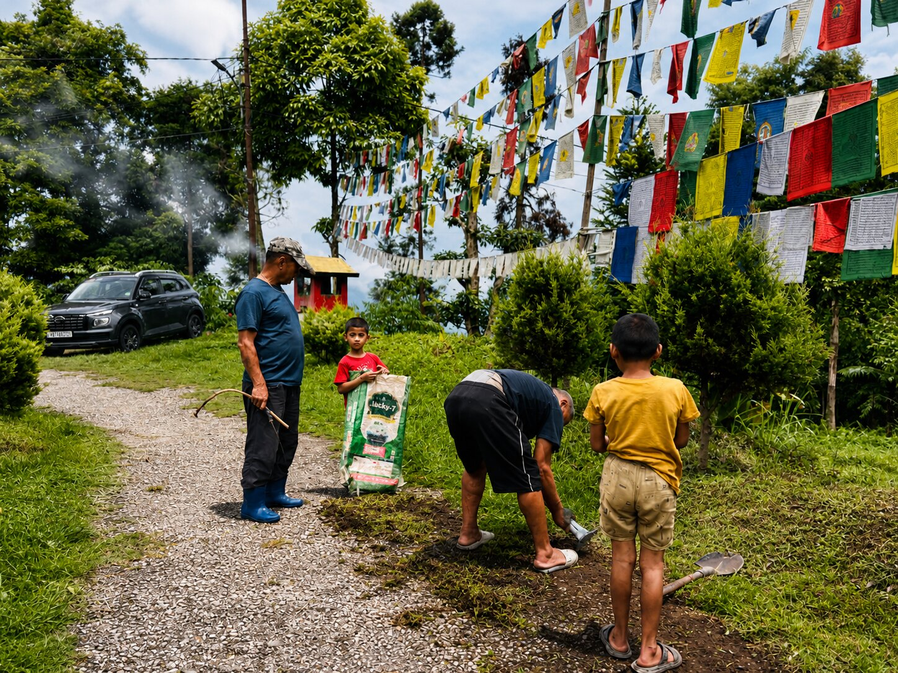
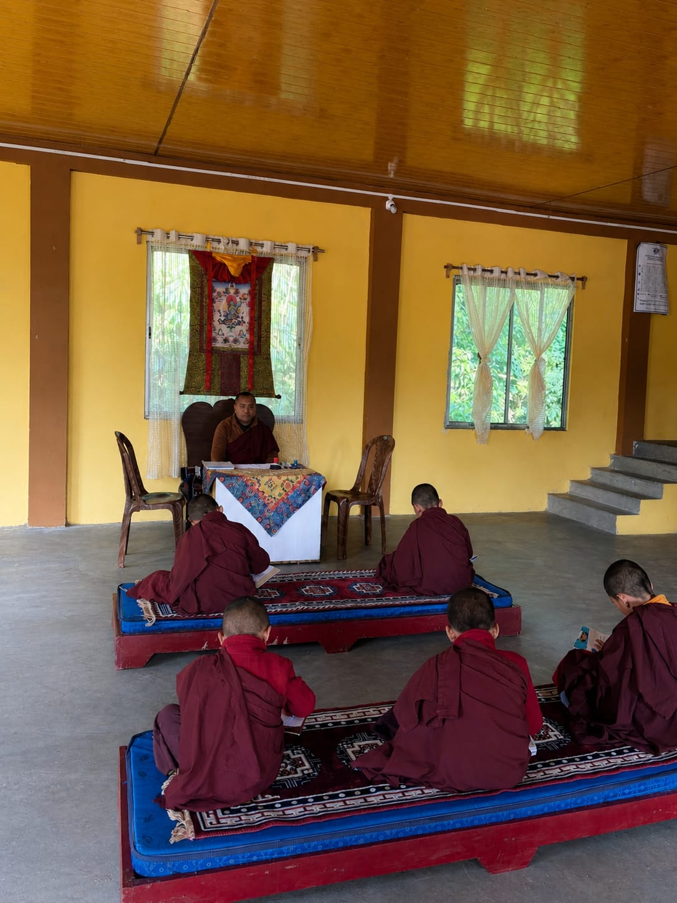
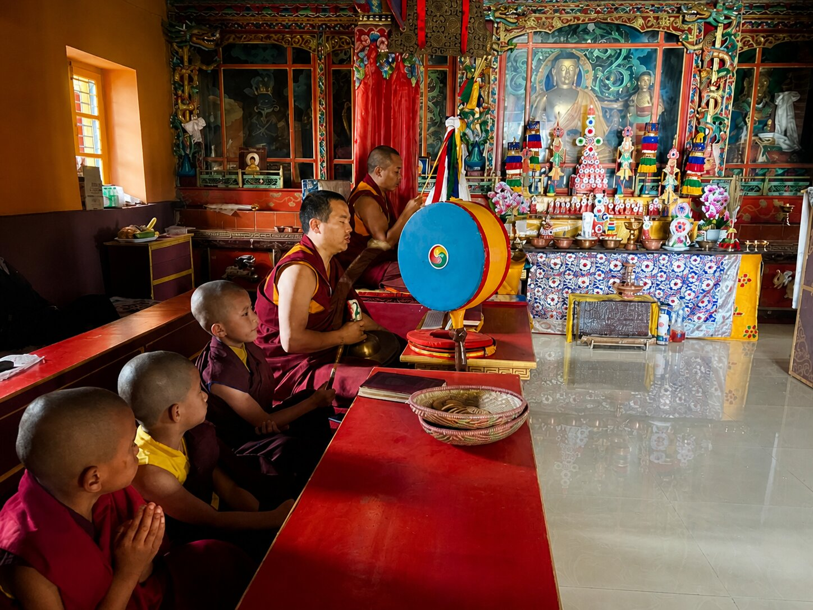

Spiritual Significance

The monastery maintains ritual practices, prayers, and seasonal observances aligned with the Nyingma lineage of Tibetan Buddhism.
The presence of Gyalwa Lhatsun Chenpo forms an important spiritual anchor within the monastery’s tradition and devotional life.
Monks & Daily Life
Daily life at Sangchen Thongdrol Ling is structured around prayer, study, and routine responsibilities. Its rhythm reflects disciplined practice rather than ceremonial display.

Monks engaged in study and recitation within the monastery, reflecting monastic learning traditions.
Mornings typically begin with collective prayers in the main prayer hall, followed by individual study and assigned duties. These may include maintenance of the monastery grounds, preparation for rituals, and other forms of communal work necessary for sustaining the institution.

Daily responsibilities within the monastery, including maintenance and preparation for rituals.

Annual examinations of young monks conducted by Ven. Lopon Yeshey Dorjee Bhutia, head monk of the monastery.
The monastery is historically linked to Pemayangtse and follows the Nyingma tradition. Instruction, where available, aligns with this lineage, including recitation, ritual training, and foundational doctrinal learning. Basic English and communication skills are also imparted, enabling younger monks to engage more effectively with visitors and to communicate the Dharma more widely.

Collective prayer within the monastery, aligned with the Nyingma lineage and ritual tradition.
Life within the monastery is simple and structured. The emphasis remains on practice, preservation of ritual knowledge, and the disciplined training of younger monks within the broader lineage framework.